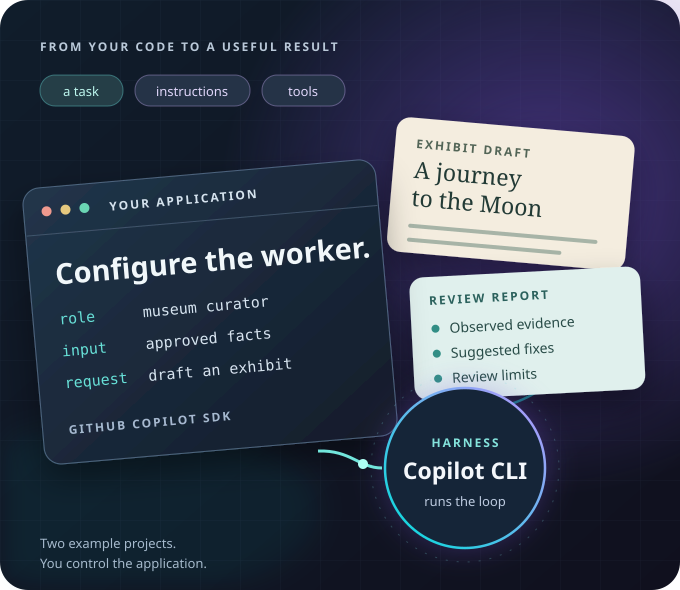

Build an AI agent with the GitHub Copilot SDK.
Configure a model-driven worker for a task. Give it instructions and tools, then control how it works from your own application.
The GitHub Copilot SDK is your programming interface. The Copilot CLI runtime is the harness that runs the agent's model-and-tool loop.

What you'll learn
- Create a conversation and stream its response.
- Give the agent a function your application owns.
- Connect external tools with Model Context Protocol (MCP).
- Control permissions and check the result.
Choose your project and language
Bring basic programming and GitHub Copilot experience. No SDK knowledge is needed. Each lesson gives you a short explanation, an edit, and a result to check.
The software development life cycle (SDLC) covers building and maintaining software. The accessibility reviewer supports that work. The museum agent is a non-SDLC example: it helps with museum writing rather than software development.
Choose your workshop language
Choose a project, then select the language you want to use.
Choose a project and language to open its introduction and setup instructions.
Why build an agent into an application?
A prompt asks for behavior. Your application must also control data, permissions, and failures. Learn where the model makes a choice and where code enforces a rule.
What is the agent, exactly?
Here, an agent is a model-driven worker configured with instructions, conversation context, and optional tools. The model, SDK client, session, and tool functions are components, not complete agents by themselves. The Copilot CLI harness runs their interaction.